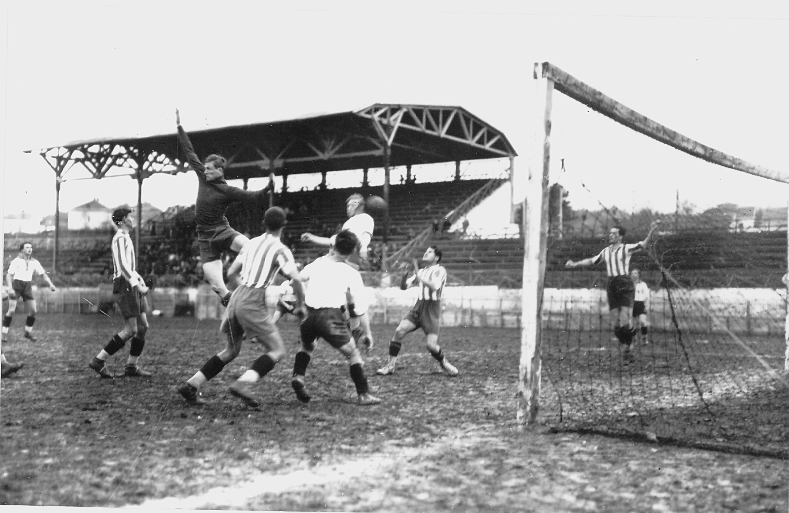

Фудбалски клуб Црвена звезда основан је 4. марта 1945. године, на иницијативу чланова Уједињеног савеза антифашистичке омладине Србије. Првобитно, месец дана раније - у фебруару исте године, основано је ново омладинско фискултурно друштво које је брзо прерасло у спортски колектив и добило име Црвена звезда
.

Прва утакмица одиграна је на сам дан оснивања, а ривал је био Први батаљон Друге бригаде КНОЈ-а. Наш тим је славио резултатом 3:0 на игралишту Студента
. Црвена звезда је тада наступала у следећем саставу: Голубичић (Попадић), Станковић, Филиповић, Печенчић, Ћирић, Јовановић, Величковић, Томашевић, Шапинац (Стокић), Спасојевић и Хорватовић. Стрелац првог, историјског гола за Црвену звезду, био је Коста Томашевић. Током прве године постојања, Црвена звезда је одиграла укупно 36 мечева. Забележила је 30 победа, нерешено је било пет пута, а једини пораз доживљен је у Темишвару против Румуније.
Први трофеј - трофеј Првенства Србије, освојен је 1946. године. У завршном такмичењу у мају и јуну 1946. године, учествовало је шест тимова. Црвена звезда је освојила прво место победивши Железничар у Нишу, Металац у Београду, Јединство у Смедереву и Раднички у Крагујевцу. Једини меч који је наш тим изгубио био је против Борца из Чачка.
Више информација о историји фудбалског клуба Црвена Звезда можете пронаћи на линку
fkcrvenazvezda.rs.
У лето 2013. године у клуб стижу велика појачања и видела се жеља да се поново врати на врх домаћег фудбала. Поред новог тренера Слаавише Стојановића највеће име је Милош Нинковић који је испунио дечачки сан и заиграо за клуб који воли. Иако је сезона 2013/14. кренула необећавајуће, где је у првом делу сезоне забележено неколико тешких пораза, ипак у наставку је цео тим одиграо знатно боље. Нови тренер Славиша Стојановић, је поред свих проблема у клубу успео да извуче максимум од својих играча. У другом делу сезоне је забележено 13 узастопних победа и тако је Црвена звезда успела да се поново попне на трон. Током сезоне нарочито су се истакли Печник, Мрђа, Милијаш па и голман Бајковић. Ипак овај успех није имао одговарајући ефекат, јер је УЕФА због дуговања избацила Звезду из Европских такмичења.
У јуну 2015. године Миодраг Божовић преузима Звезду, после оставке Ненада Лалатовића. У сезони 2015/ 2016 је освојена 27 титула првака државе.
Црвена звезда је на лето након освојене титуле играла квалификације за Лигу шампиона. У другом колу квалификација елиминисан је малтешки тим Валета.
У трећем колу играно је са бугарским тимом Лудогорец, где је у првом мечу у гостима било 2:2 а код куће Звезда је изгубила са 2:4. Звезда је ипак наставила такмичење у плеј оф УЕФА Лиге Европе против Сасула. У првом мечу у Италији било је 3:0 за домаћи тим а у другом сусрету 1:1 тако да је београдски тим завршио такмичење у Европи.
У августу 2017. године, Црвена звезда се пласирала у Лигу Европе након десет година савладавши у трећем колу квалификација Спарту Праг резултатом 3:0.[49] Затим, у плеј-офу славила је против руског Краснодара. У првом мечу у гостима Звезда је изгубила са 2:3, а код куће је победила са 2:1.[50][51] У групној фази Х, Звезда је играла против Арсенала, БАТЕ Борисова и Келна. 7. децембра 2017, фудбалери Црвене звезде савладали су у „мечу деценије“, у последњем колу Х групе, екипу Келна и изборили после 25 година пласман у нокаут фазу неког европског такмичења. Стрелац победоносног гола био је Славољуб Срнић у 22. минуту меча у Београду. У шестнаестини финала, фебруара 2018, Црвена звезда дочекује ЦСКА Москву где је Звезда код куће одиграла нерешено, а у гостима је поражена са 1-0.